我が国が世界における文明国の中で有数の雪国であることは周知の事柄である。しかし雪に関する研究は今まであまりなされていないので、わずかにこの『雪華図説』と、少しく趣を異にするが鈴木牧之の『北越雪譜』ぐらいがあげられるだけである。このように量において極めて乏しいのであるが、その中『雪華図説』の方は、現代科学の眼から見てもかなり優れた研究であると思われる。『雪華図説』は、天保三年（西暦一八三二年）下総
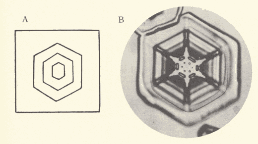
第一図
第一図は六角板の例であって、この種の雪は水蒸気が比較的少い時に出来る。我が国では後述の樹枝状の結晶に比し、観測回数が少くまた大きさも小さいことが多い。（Ｂ）の写真は札幌で撮影したものであるが、十勝岳の三千五百尺位の高さの所では、この十分の一くらいの小さい角板が沢山観測される。その方は結晶生成初期の状態である。そういう小さい角板から順次大きい角板に生長するので、内部に色々の模様が出来る。（Ａ）の摸写図にもそれが描いてある。
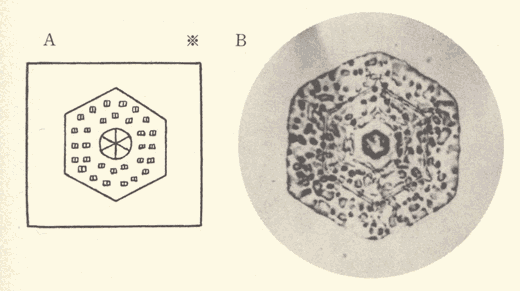
第二図
第二図はこの角板に微水滴が附著したものである。地表に近い所に雨雲の層がある時、これらの雨雲は零度以下の気温の時も過冷却された微水滴の状態でいることが多い。角板の雪が上層で出来て落下して来る時、この雨雲の層で雲の粒子が結晶に凍りついて来る。第二図（Ｂ）に附著している粒の直径を測ると大体従来知られている雲の粒の大きさと一致する。（Ａ）の摸写図はこの雲粒付結晶を示すものであろう。この微水滴は凍りつく時下の結晶の影響を受けて、自身も結晶質の氷になることが多い。（Ａ）の粒が角柱を横から見たような形に描いてあるのは、そのことに気がついていたのかも知れない。（※附記参照）
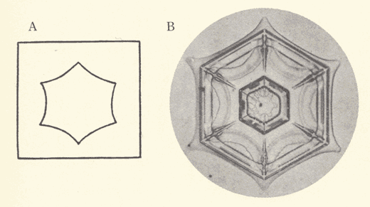
第三図
第三図（Ａ）は辺が糸捲き型に彎曲した六角板である。この形の雪の結晶は、同図（Ｂ）の型を示しているものと思われる。この（Ｂ）は、六角板の結晶が、落下途中少し水蒸気の多い層へくると、角から枝が出始めるのであるが、その出始めの状態を示すものである。すなわち丁度その状態の時地表に達して、吾々の眼に留ったのである。内部の構造は落下途中昇華作用という現象のために消えてしまうこともあるので、従って同図（Ａ）のように見えることも有り得る。
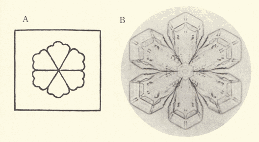
第四図
第四図は「扇形」と称する結晶型であって、角板の場合よりも水蒸気の供給度の少し多い時に出来るものである。もっとも水蒸気が多くなると、結晶は細い枝の集合即ち樹枝状になるのであって、この
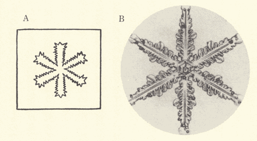
第五図
第五図（Ｂ）の結晶は、
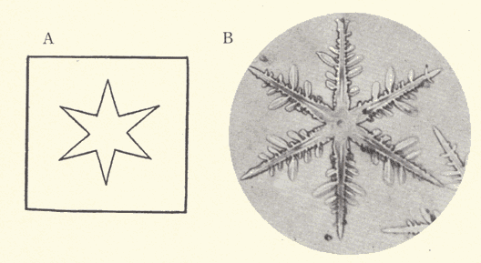
第六図
第六図は実は摸写図と写真との対照が全体としてあまり一致していないのであるが、中心から六出している枝の形の一つの特徴を捕えているという点を示すために掲げたものである。同図（Ｂ）の写真で見られるように、この大枝は、この場合は内部に構造が見られず、かつ先へ行くほど段々細くなるような形をしている。（Ａ）の摸写図はその特徴をよく示していると思われる。顕微鏡写真の方は、その外に小枝が沢山見られるという点が違っているだけである。
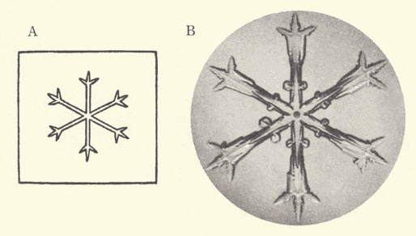
第七図
第七図は摸写図と顕微鏡写真とが極めて著しい類似を示している例である。中央から六出している枝の先端に近い所で、簡単なしかし明瞭な小枝が出ている場合であって、こういう模範的な枝分れの例は、枝分れの現象の研究に大切な資料である。この（Ｂ）図は、結晶が出来てから観測されるまで大分時間が経ったために、内部の構造即ち小凹凸が、昇華作用のためにかなり消えているのであるが、他の例では、この枝分れの点で結晶の核（蕊）が見えることが多い。多分結晶生成の途中、結晶の他の核が枝の一部に附著すると、そこから枝分れが生ずるものと思われる。この場合と限らず、一般に結晶の落下速度から計算すると、これらの結晶は少くとも二、三時間かかって出来たと思われ、特に比較的暖かい地方では、観測するまでにかなり変形していることが多いのである。
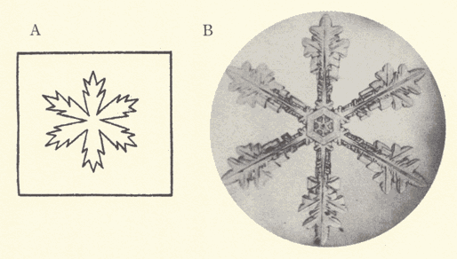
第八図
第八図は広幅樹枝と称する型の一種で、樹枝状の枝の幅がかなり広い。水蒸気の供給多く、結晶が速く発達すると、枝は細くなる。この種の広幅樹枝の結晶は、前述の扇型と後述の完全樹枝状との中間の状態で出来たものと思われている。同図（Ａ）の枝の外形は、（Ｂ）の種類の結晶の特徴をよく見たものであると思われる。
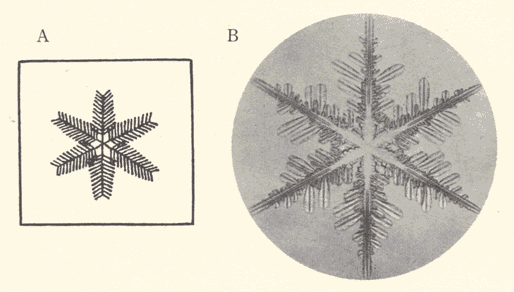
第九図
第九図は完全樹枝状の結晶の例であって、この種のものを羊歯状と呼ぶことが多い。中心から六出している大枝から沢山の小枝が出ている。この小枝は皆六十度の角度で出ているので、従って各々の小枝は他の大枝と並行している。欧洲の昔の雪の記録でも、旧い頃例えばマグヌス（一五五〇年代）の頃はまだ此の小枝が六十度で分岐していることは知られなかったが、フック（一六六五年）の時代になると、その点が明かにされている。土井利位の観測は、それよりまだ百五十年以上も後のことであるから、当然のことではあろうが、（Ａ）の摸写図にはその点も明瞭に描いてあり、かなり立派な摸写であることが分る。この
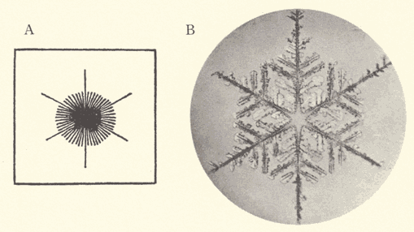
第十図
第十図は羊歯状結晶の一例で、主な枝の先が特に著しく伸び出ているものである。同図（Ａ）はその点はよく捕えてあるが、中央部の構造は違っている。同図（Ｂ）の結晶をちょっと見ると（Ａ）のような形に見えることは吾々も経験していることで、（Ａ）図のような放射構造のものは天然にはないだろうと思う。
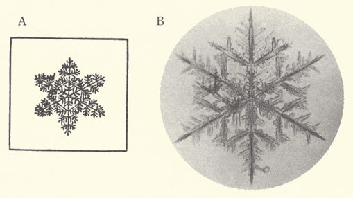
第十一図
第十一図はこの羊歯状よりも一層複雑な構造のもので、小枝からさらに第二段の小枝が出ている場合である。（Ａ）の模写図にその特徴がよく描いてあるが、小枝の方向が少しちがっている。これは図が描きにくいので少し曲げたものであろう。第九、十、十一図の各顕微鏡写真はその他の多くの写真と同様に、十勝岳で撮影したもので、このような繊細を極めた構造の結晶は外国でもあまり撮られていない。
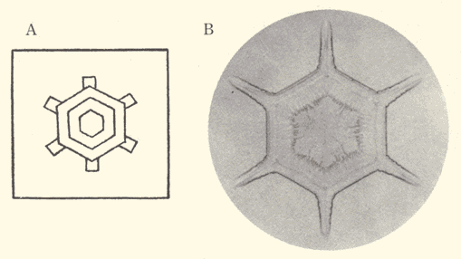
第十二図
第十二図は再び角板に戻って、六角板の各端から簡単な枝の出たものが示してある。すなわち第三図の結晶がさらに進んだもので、上空で六角板の出来るような状態があって、そこで出来た角板が落下の途中で、枝状発達をするような気象条件の層を通っている間に、その端から（Ｂ）図のような枝が出たものである。（Ａ）の摸写図は、その枝がまだ短い時のものを示しているのであろう。
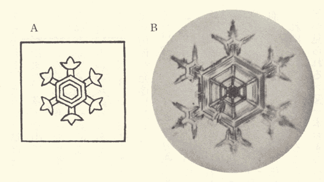
第十三図
第十三図は、この角板についている枝が樹枝状発達をした例である。すなわち地表に近い水蒸気の多い層が、前の場合よりも厚く、かつ水蒸気の量も多い時にはこの図のような結晶が出来るのである。ただしこの場合の枝はまだ十分に羊歯状というまでには発達していないのであるが、その点も（Ａ）の摸写図にかなりよく表現してある。
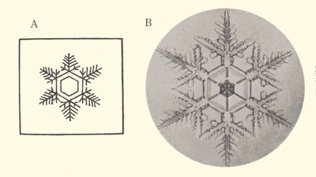
第十四図
第十四図の写真は、角板から羊歯状発達の枝が出た例を示している。この時はそれで、地表に近い気層が十分に水蒸気を含み、第九図の結晶が出来た時と似た状態にあったことが分る。すなわち第十二、十三、十四図のような結晶の雪が降る場合は、上空に水蒸気の少い角板の出来る状態の気層があり、地表近くに、それぞれ水蒸気の量が色々異った気層があったことを示しているのである。逆にいえば、結晶の形を見ると、その時の上空の気象状態が分ることになるので、その時の条件をもっと詳しく知るには、これらの雪の結晶を人工的に作って見れば、その実験結果から上空の気象状態が推測出来る。雪を人工的に作ることも今では出来るようになったので、土井利位の摸写図も大部分はその意味が分るのである。第十四図（Ａ）で角板に近い小枝からさらに第二段の小枝が出ているのも、（Ｂ）の写真に見られる通り実際にあるのであって、全く出鱈目に描いたものではないのであろう。
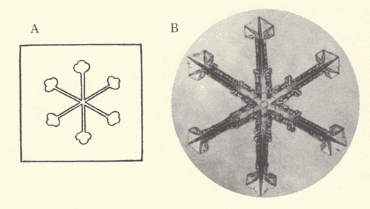
第十五図
第十五図は以上の場合と反対の気象状態の下で出来た結晶を示している。すなわち上空に簡単な樹枝状発達をする層があると、まず中心から六出する星状の結晶が出来、その結晶が落下してきて、地表近くで水蒸気の少い層に遭遇すると、星状の枝の先端に同図（Ｂ）のように小角板がつくのである。同図（Ａ）の摸写図との一致は驚くべきものであろう。
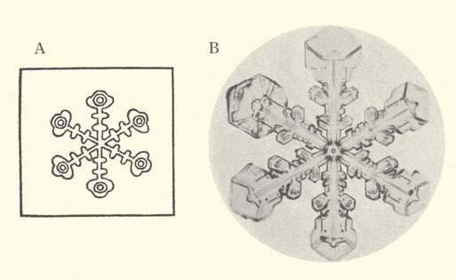
第十六図
第十六図の結晶も第十五図の場合と似たものであって、ただこの時は、先端が二重になり特殊の構造を示している。前出の小角板とは少しく趣を異にしていることは顕微鏡写真でよく見られる通りである。摸写図ではこの特殊構造は二重
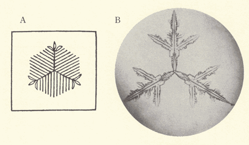
第十七図
第十七図は、比較的珍しい三花の結晶の例である。この三花は従来外国でも観測されていたものであるが、十勝岳の研究でその成因が分った。即ち結晶が出来始めの極初期に核が二つ上下に重ってくっつき合い、その一方の核から偶々三花が伸び、他の核から他の三花が発達した場合が考えられる。そういう結晶は一見六花に見えるが、適当に中心をつつくと、三花二箇に分離することが出来た。落下途中風などのために自然にその分離が起ると三花の結晶が出来るのである。それでこの三花は双児の片割れと見ることが出来る。（Ａ）の摸写図では、小枝を少し伸し過ぎて、全体として六角形に近く描いてあるのは少し作り過ぎと思われるが、大体の傾向は、小枝は中心に近いものが長いのである。

第十八図
第十八図（Ｂ）の結晶は特殊のもので、六角板の周辺に近い点に他の核が附著し、そこから他の扇形角板が発達したものである。それでこの外側にある六枚の角板（少し幅広い枝が伸び出ている）はちょっとつつくと分離出来るのである。（Ａ）の摸写図に外側の六枚の角板が分離しているように描いてあるのは、この種の結晶を指しているのではないかと思われる。もっともこれは少し贔負の引き倒しの説かもしれない。
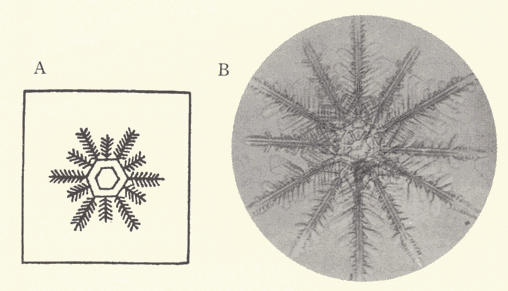
第十九図
第十九図は羊歯状の十二花である。この十二花の結晶も従来時々外国でも知られているもので、これは六花の普通の結晶が二つ重ったものである。中央部に背の極めて低い角柱があるために、前の三花の時とちがって、六花が二つとも発達することが出来、十二花になったのである。故にこれは六花二つに分離することが出来る。（Ａ）の摸写図で中央にその角柱のあることを示す六角形が見られる。又一本おきの六花が一つの結晶で、他の六本が他の結晶であるから、多くの場合長短二種の枝が交互に出ているので、その特徴は（Ｂ）の写真でよく見られる。ところが（Ａ）の摸写図にもその特徴が判然と描かれていることは驚くべきことである。
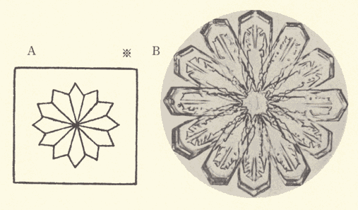
第二十図
第二十図は広幅の十二花の例であり、この時は、枝の生長が遅いために、現象が安定となり、従って十二本の枝が全部同じ長さになりやすい。同図（Ａ）の摸写図でもその点がちゃんと表現されている。（※附記参照）
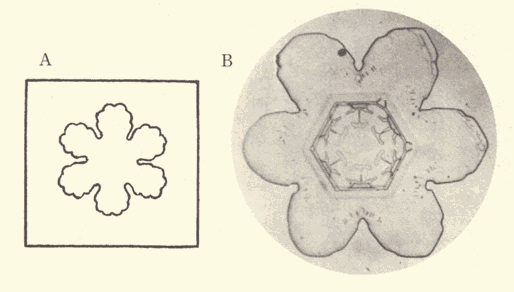
第二十一図
第二十一図（Ｂ）の結晶は今迄のべた結晶とその外形が著しく異って、円みを帯びた形となっている。これは落下途中地表に近くなって気温が零度以上になったために、輪郭がとけたのである。この写真は札幌で撮影したもので、十勝岳などではこの種の形のものは見られない。内地ではこのようにとけたものが多いので、昔から伝っている雪輪風の形はこれである。（Ａ）の摸写図はその輪郭のとけたところをよく示していると思われる。『雪華図説』には、この例の外にも、円みを帯びた輪郭のものが沢山掲げてあるが、本文では略することとする。
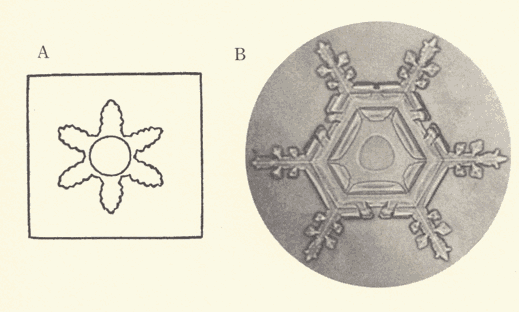
第二十二図
第二十二図（Ａ）のような摸写図が『雪華図説』中に再三見える。すなわち中央部に円形の模様がついているものである。この円形は第十六図（Ａ）の時のように、何かの構造を表象的に描いたものであるかも知れないが、実際に天然雪の中で、こういう円い輪が結晶の中央部に見えるものがある。大抵はその線は非常に薄いので、もしこれを認めて描いたのならば驚くべきことである。その一例は同図（Ｂ）に示す通りである。この円の成因はまだ分らない。
以上二十二例について、『雪華図説』中の摸写図と、それに対照する雪の結晶の顕微鏡写真とを比較することによって、土井利位の摸写図の大部分は極めて自然に忠実なものであることが分った。雪の結晶の顕微鏡写真を撮影する場合は、気温が少くも零下三、四度以下の低温にあることが必要である。良い写真を撮るには、零下十度以下の低温が望ましいので、十勝岳で私たちが撮影している場合は、大抵零下十度ないし十五度の気温の時である。気温が零度以下でも比較的暖かい時には、結晶は地表に達する前に昇華作用などによって変化するので、吾々の観測にかかるまでに、既にその美麗繊細な形を失っていることが多い。虫眼鏡による肉眼観測の場合は、顕微鏡写真を撮る時ほど、気温の低いことは必要ではないが、それでも零下四、五度以下の時が望ましいのである。土井利位の住居下総の古河のような所では、厳寒の時でも、夜か夜明けでないとちょっと観測が困難であろうと思われる。日中雪の降っている場合は、下総などの地方では、気温がかなり高いことが多いからである。普通黒い布片、特に毛織物が望ましいのであるが、それをよく冷してその上に降ってくる雪の結晶を受けて、虫眼鏡で覗くのが一番便利である。土井利位も厳寒の夜更けの縁先などで、すっかり身体を冷しながら観測したものと思われる。身体が温っていると、その輻射熱のために結晶を覗くと消えてしまうのである。
ところでこういう雪の結晶の観測心得が、ちゃんとしかも非常に要領よく、『雪華図説』の中にかいてあるのには少々驚いた。「西土雪花ヲ験視スルノ法。雪ナラントスルノ天。預メ先。黒色ノ
 器ニ承ケ之ヲ審視シ。以テ此ノ図ヲ作ル。」というのであるから、現代の吾々が注意をするとしても、先ずこのくらいの所であろう。器
器ニ承ケ之ヲ審視シ。以テ此ノ図ヲ作ル。」というのであるから、現代の吾々が注意をするとしても、先ずこのくらいの所であろう。器これだけの注意をしてこういう忠実な観測を長年月にわたって続けることは、私たちの経験から見ても、かなりの労苦を伴った仕事であったことだろうと想像される。小さいながらも一城の主の趣味的仕事としては正に感嘆すべきものである。
欧洲の昔の雪の結晶の記録で有名なものは、英国の気象学者ゼームス・グレイシャーの摸写図であって、彼は一八五五年、すなわち『雪華図説』におくれること三十二年に、百五十一箇の雪華の摸写図を発表している。彼の仕事は顕微鏡写真の発達する以前の雪華図としては、最も精巧を極めたものということになっているが、公平に見て私は土井利位の『雪華図説』はそれに劣らぬ立派なものであると思っている。もっともグレイシャーのものも、土井利位のものも共に、雪の結晶といっても、六花系統の平面結晶だけに注意を払っている。実際に天然に観測される雪の結晶の中には、針状、角柱状、鼓状など色々珍しい型のものがある。この角柱状、鼓状などの記録は、一八二〇年すなわち『雪華図説』よりも十二年以前に、英国の捕鯨業者ウィリアム・スコレスビーによって記録されているので、その点ではいささか劣っている。もっともスコレスビーは北極地方でこれらを観測したのであり、我が国では北海道ならばよく見られるのであるが、内地特に古河などではほとんど降らないのかも知れない。それだとすると止むを得ないことであろう。
『雪華図説』の九十八箇の摸写図中、本文では比較的現代の顕微鏡写真と一致したものを多く選んだのであって、中にはあるいは見誤りであろうと思われるものもある。もっとも私たちの写真の蒐集がもっと多くなるか、あるいは全国各地の雪の結晶を観測しつくしたら、『雪華図説』の中にある不思議な形と思われる結晶がまた見付かるかも知れないので、その点は今断言することは出来ない。
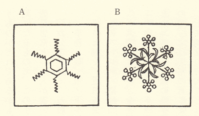
第二十三図
その不思議な形という中で、従来は、まだ世界中のどこの記録にもないが、あるいは有り得ると思われるものは、第二十三図（Ａ）（Ｂ）に示したような廻転性を示す形の結晶である、この種の平面結晶が空中を落下してくる場合は、流体力学の法則によって、結晶の平面が大体水平になって、それがぐるぐる廻りながら、螺旋形の道をとって落ちてくるものである。そうすると、第二十三図の両図のような廻転性を示す形の結晶が出来ても良いはずである。実はこの種の形の結晶を探しているのであるが、まだ見付かってはいない。もしそういうものが見付かったならば、『雪華図説』は単に現代科学によって説明されるという許りでなく、かえって現代科学になんらかのものを教えたということになるので、大変面白いことになるであろう。
〔附記〕私は考証の方面では全く素人で、『雪華図説』の原本というものがどれであるかも知らなかったのである。今手許にあるのは、文久二年大槻磐渓先生の重刻になるもので、この小文はそれによって書き、また摸写図もその本から複写した。この本では、鷹見忠常という人が書いた附記がついている。多分原本にもついているのであろう。
我公学ヲ好ミ。万般ノ事物。必ス其理ヲ※［＃「窮」の「弓」に代えて「呂」、U+7AC6、260-4］格ス。臣忠常晨昏給仕シ。辱ク其清誨ヲ奉ス。公事務ノ暇。雪ノ下ル毎ニ之ヲ審視スルコト。今春ニ至テ。幾ト二十年。其図ハ前ニ列スルモノ 如シ。近日 公ソノ図説ヲ著シ。之ヲ梓ニ上ス。謹テ按スルニ。西洋人
如シ。近日 公ソノ図説ヲ著シ。之ヲ梓ニ上ス。謹テ按スルニ。西洋人瑪児低涅多 カ。著ストコロノ格致問答ニイフ。検視スルトコロ五百余種。近ク見ルトコロノ十二ヲ図スト。其中公ノ図ト。全ク同キモノアリ。見ルヘシ。東西万里ノ遠モ。好尚既ニ同ク。物理マタ異ナルコト無キコトヲ。其説ハ 公ノ総説中ニ在リ。今只其図ヲ左ニ列ス。……
といって、十二箇の摸写図を附加している。第二図（Ａ）及び第二十図（Ａ）はその中から採ったもので、之は忠常の言によれば、土井利位の描いたものではなく瑪児低涅多の摸写図らしい。しかし土井利位の時代にそれが日本人に知られていたという理由で、これも本文の中に入れた。この十二の図中には明かな間違いと思われるものが一つある。如シ。近日 公ソノ図説ヲ著シ。之ヲ梓ニ上ス。謹テ按スルニ。西洋人それから『雪華図説』には『続』があり、それには九十七箇の結晶の摸写がある。その外土井家にも版下が残っている由であるが、本文では単に『雪華図説』だけに話を限ることとした。
（昭和十三年十一月）
〔附記二〕マルチネットの『格致問答』は、最近になって、矢島祐利氏の研究によって、漸く明かになった（『科学』第十一巻第三号）。それは J. F. Martinet の Katechismus der Natuur という本の由である。内容は同氏によると「太陽、地球、人間、陸と水等から始まり、動物、植物にも及んで問と答の形式を以て書かれたものである」。そして『雪華図説』所載の十二個の雪の結晶の摸写は勿論載っていて、外に霜の図もある由である。従ってフリードリッヒ・マルテンスの雪の結晶とは全く別である。